ConnectOEE · Product brochure · Print → Save as PDF
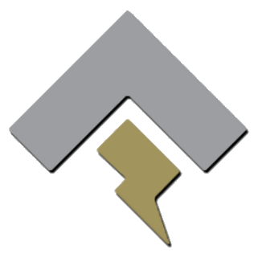
ConnectOEE
On-prem OEE Accelerator
See every line. Know every stop. Act in the shift.
Browser-based OEE for the plant floor — live PLC signals, operator action, and wall-ready dashboards
on your factory LAN. No cloud dependency. No learning curve.
Commission your first line this week
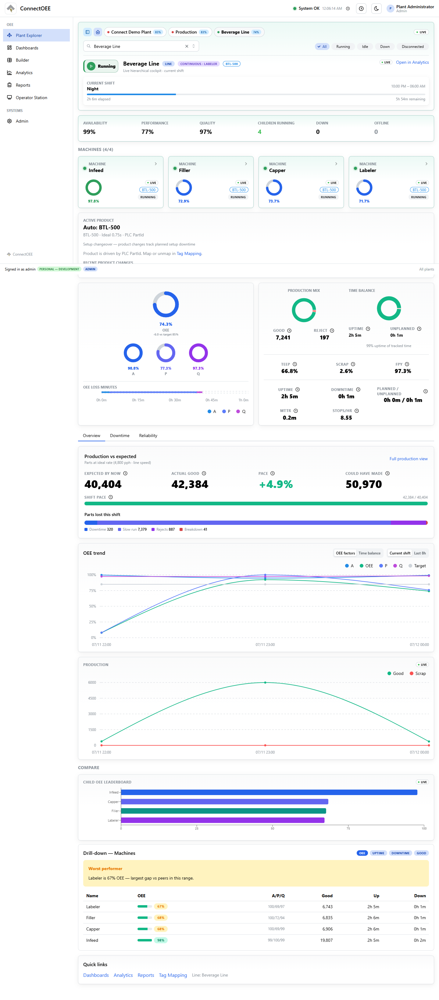
Plant Explorer — Beverage Line live cockpit (Continuous topology)
ConnectOEE
Why teams choose it
Best-in-class OEE Accelerator — built for the floor
ConnectOEE is a complete on-prem accelerator: hierarchy, drivers, tag mapping, live OEE math,
operator workflows, kiosk walls, analytics, reports, and a true WYSIWYG dashboard builder —
in one Windows-hosted product.
Zero learning curveFully on-premMulti-plant / lineTouch-friendlyConnection state always visible
Operators first. Status, counts, reasons, and fault ack without hunting menus.
Engineer-grade mapping. Live tag browse, UDT members, role-based signal bind.
Topology-aware OEE. Continuous pacing/output lines and Independent cells with shared SKU rates.
Ship-ready boards. Templates and per-line Andon / Operator / Production / Quality / Supervisor packs.
Offline licensing. HMAC keys activate on the factory network — no phone-home.
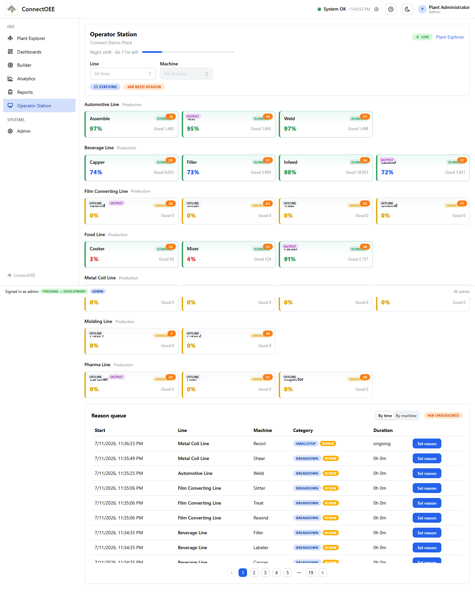
Operator Station — live stations across the plant
02
ConnectOEE
Capability map
Everything an OEE program needs — in one suite
Live OEE & APQ
Availability, Performance, Quality with shift-aware math and ideal-rate handling.
Reliability
MTTR, MTBF, MTTF, MTTD and downtime analytics tied to real stop events.
Downtime reasons
PLC code catalog, auto-stub unknowns, operator assign when unbound.
Shifts & calendar
Patterns, boundaries, and runtime that respect how the plant actually runs.
Historian
PostgreSQL + TimescaleDB time-series with rollups for hour, shift, day, and beyond.
Reports
Generate, history, schedules, delivery, and custom report designer.
RBAC & audit
Role permissions, plant scope, and full audit trail for industrial accountability.
Kiosk & Present
Fullscreen Andon walls and presentation chrome for war rooms and walks.
Recipes & rates
Product catalog, per-line speeds, and auto-created SKU review workflows.
Light & Dark mode are both built in for the floor and the control room. This brochure shows the light UI only so product screens stay consistent.
03
ConnectOEE
Plant Explorer
One live cockpit from fleet to machine
Drill Plant → Department → Line → Machine with health, children, and insights in one view.
Topology rules stay honest: Continuous lines use pacing/output; Independent cells share line+SKU rates.
Beverage Line — Continuous
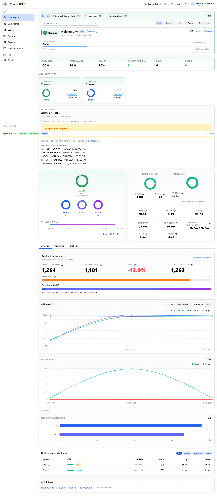
Molding Line — Independent peers
Overview / Downtime / Reliability tabs at line and machine scope.
Live connection health so stale data never masquerades as truth.
Proven on Connect Demo Plant: 7 lines · 23 machines from a single Rockwell EIP PLC.
04
ConnectOEE
Operator Station
Action at the station — not after the shift
The Operator Station is built for gloves, distance, and urgency: run state, good counts,
reason queues, product/SKU, and fault acknowledge when writes are permitted.
Reason assign from a curated downtime catalog (Admin → Reasons).
Product select and line-speed awareness for Performance math.
Fault Ack / Reset / Start permissive through audited PLC control maps.
Deep links into recipes review when auto-created SKUs need attention.
Ship Andon boards per line, then open them fullscreen for the wall — or Present with chrome for
leaders walking the floor. Same widgets, wall-fit geometry, 1080p-aware profiles.
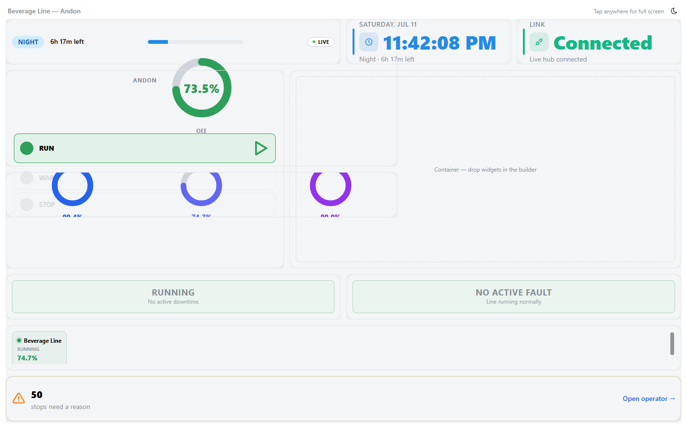
Kiosk — Beverage Line Andon
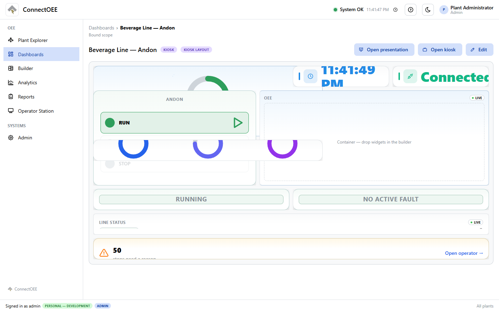
Dashboard view — Line Andon
Anonymous kiosk stays read-only; signed-in operators can act when boards include interactive widgets.
Templates prove nesting + interactive pads on Operator Floor and Line Andon.
06
ConnectOEE
PLC connectivity
Multi-driver stack — modular, live, honest
A shared IPlcDriver abstraction feeds ingestion and OEE. Add protocols without rewriting the product.
Connection health is first-class: Connected → Stale → Faulted.
OPC UAOPC Foundation client — hierarchical browse from Objects; anonymous on-prem commissioning with local PKI.
Mock / SimulatorFull lab demos without hardware; controllable for Ack/Reset/Start permissive round-trips.
ConnectedStaleFaulted
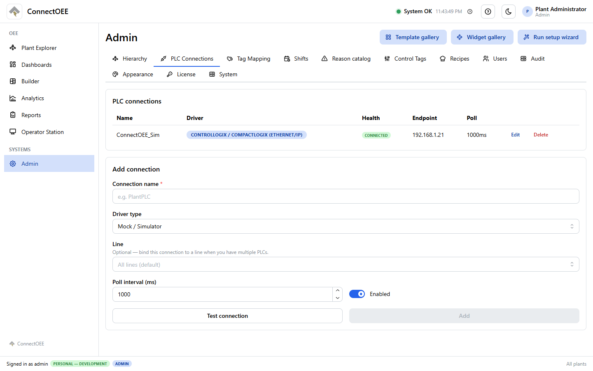
Admin — PLC connections & test
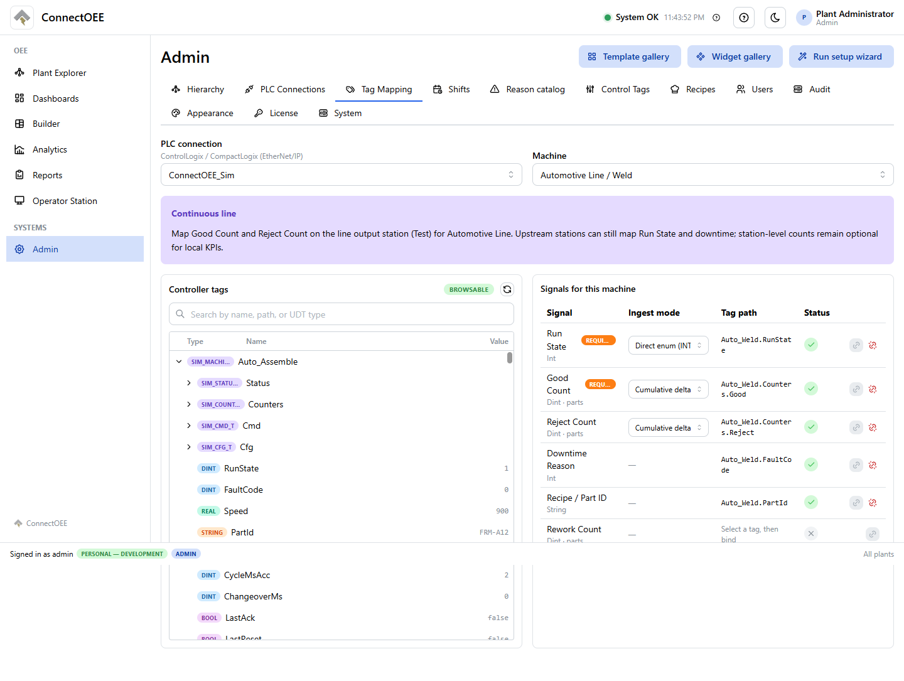
Admin — live tag browse & bind
Architecture leaves a clear path for Siemens S7 as a future driver — without touching OEE or UI modules.
07
ConnectOEE
Guided commissioning
From empty server to live OEE — one wizard
Ten guided steps: administrator, plant, hierarchy, PLC, tags, shifts, dashboards, and readiness.
Engineers map Run State + Good Count and open Plant Explorer the same day.
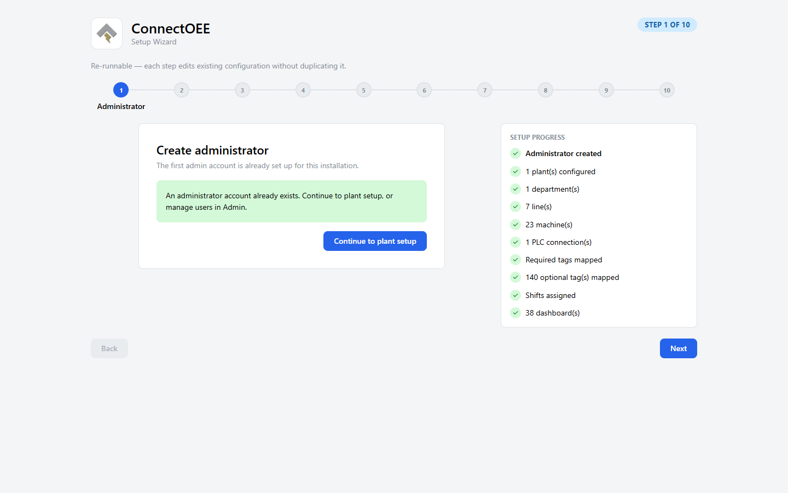
Setup wizard
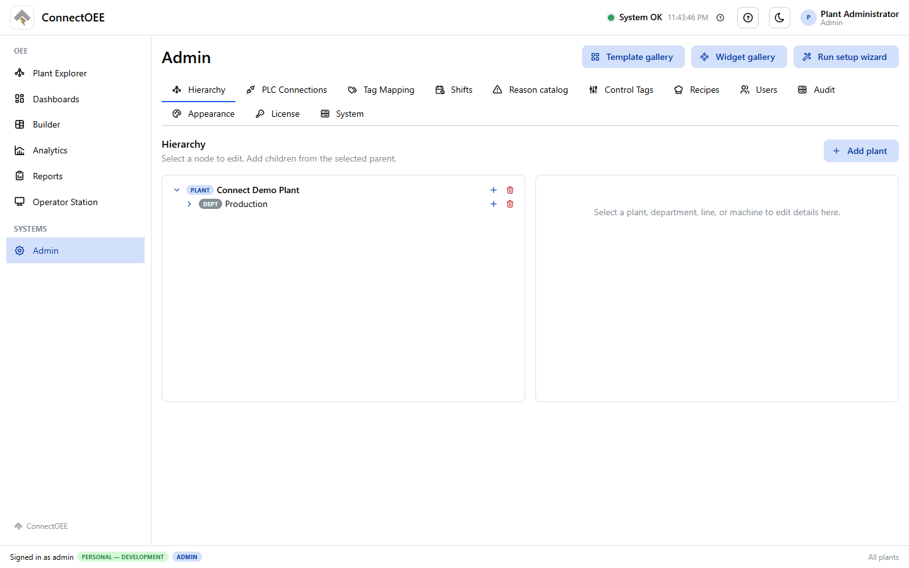
Plant hierarchy
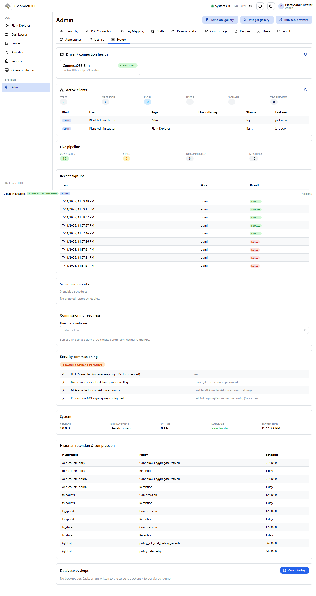
System commissioning
Multi-PLC per line; machines without a real connection can fall back to Mock for continuous demos.
Shifts, fault catalogs, control tags, and recipes configured in Admin after the wizard.
08
ConnectOEE
Dashboards & templates
Boards that ship with the plant
Apply templates or generate per-line packs: Andon, Operator Floor, Production, Quality, Supervisor —
plus Plant Overview, Analytics Starter, and Maintenance Wall. 111 widgets across OEE,
downtime, production, and status families.